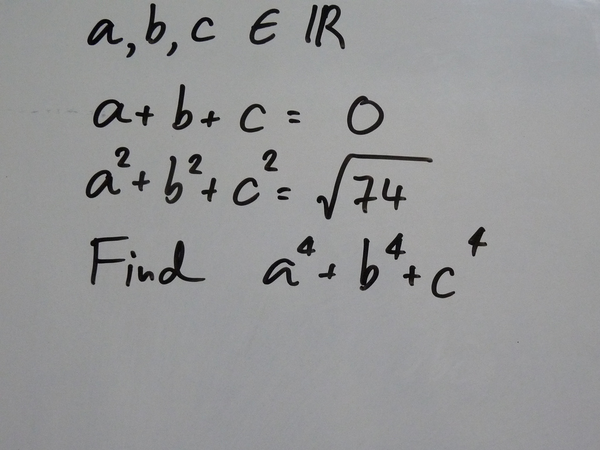
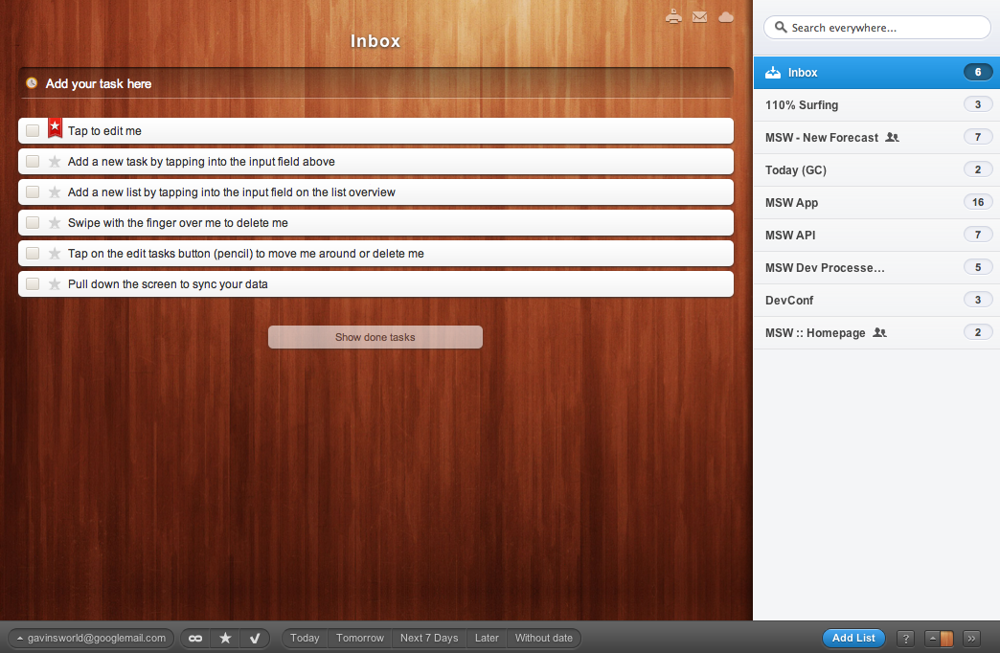
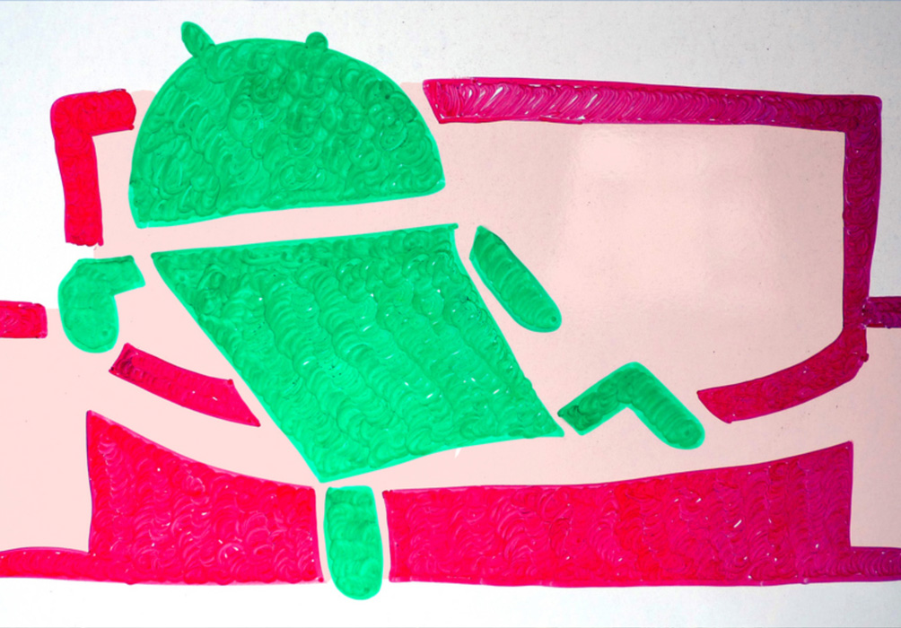

Introduction To NoSQL with CouchDB
Gavin Cooper
June 11, 2011
@gavincoop
- http://github.com/gcoop
- http://uk.linkedin.com/in/gavincoop
Magicseaweed.com
- Surf forecast for surfers.
- 1 million uniques
- 4 million page views
Let's find out why NoSQL is awesome - Enter the Delorean

Source: themoviedb.org
Arpnet
I'm Kidding
Everything starts with a problem

Source: http://www.flickr.com/photos/arjin/3271430123/sizes/l/in/photostream/
to solve a problem or harness technology to make something more efficient
Everyone can write data, everyone wants to share...
Source: http://www.flickr.com/photos/jacofoto/4794560911/
The old technology RDBMS
- Designed in the mainframe era.
- It's relational, yet we use Objects/Documents in PHP.
- It doesn't scale horizontally.
- It can't handle lots of connections.
- Running clusters is hard work.
- Memcache to turbo-charge.
the problem is real, it isn't just trendy bullshit
NoSQL (more specifically CouchDB)
- Built for todays internet, infact built of todays internet (RESTful interface, JSON documents and JS map/reduce).
- Just store the document.
- Documents means no schema, no schema migrations, simpler to replicate.
- Horizontal replication is an easy win
- Built specifically to handle many concurrent connections.
What if I don't need scale?
Schema free
Source: http://www.flickr.com/photos/josefgrunig/1732787905/
Say goodby to (lots of) this...
$DBH = new PDO("mysql:host=$host;dbname=$dbname", $user, $pass);
$DBH->setAttribute( PDO::ATTR_ERRMODE, PDO::ERRMODE_EXCEPTION );
And this...
SELECT ur.id, ur.userId, ur.spotid, ur.actualWaveHeight, ur.windStrength, ur.windDirection, ur.photoId, ur.submitted, UNIX_TIMESTAMP(ur.reportDate) AS reportDate, ur.rating, ur.reportText, ep.id AS actualPhotoId, 3956 * 2 * ASIN(SQRT(POWER(SIN((? - abs(s.`lat`)) * pi()/180/2), 2) + COS(? * pi()/180) * COS(abs(s.`lat`) * pi()/180) * POWER(SIN((? - s.`lon`) * pi()/180/2),2))) as DIST, s.lat as latitude, s.lon as longitude FROM someSpots s LEFT JOIN somePeoplesReports ur ON (ur.spotId = s.id) LEFT JOIN aUser u ON (ur.userId = u.id) LEFT JOIN someReportImage ep ON (ur.id = ep.eyeballReportId) WHERE UNIX_TIMESTAMP(ur.reportDate) > (UNIX_TIMESTAMP(NOW())-86400) AND u.trusted = 'yes' AND s.lon BETWEEN ? AND ? AND s.lat BETWEEN ? AND ? GROUP BY ur.userId ORDER BY DIST, ur.reportDate DESC
Say hello to a baked in RESTful API

Source: http://www.flickr.com/photos/josefgrunig/1732787905/
Thank you! that's a wrap.

Source: http://www.flickr.com/photos/appletv/4920964839/